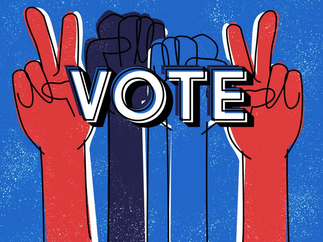

Step 1
Before voting, make sure you are confident in who you want to vote for. Make sure you know everything about the person you're voting for and why you are voting for that person over the other person. You need to be truthful and take this election seriously. If you do not take this election seriously, you are violating the Terms and Services of this election, and your vote will no longer be counted.
Step 2
Now that you have thought about who you want to vote for, simply click one of our images to vote. It will direct you to a page about one of us, and why we are far more superior than our opposing candidate. Under the page, there will be a call to action link. This is how you know, you are heading towards the final step. Remember, you can only vote for one of us once. A misuse of voting will result in severe punishment for violating the Terms and Services of this election.
